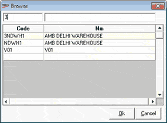

The Browse window is as shown.

Select the required party code by clicking on the row or alternatively type the code to find the corresponding details and click Ok. If you double click a row, the party details are copied to the outwards window.